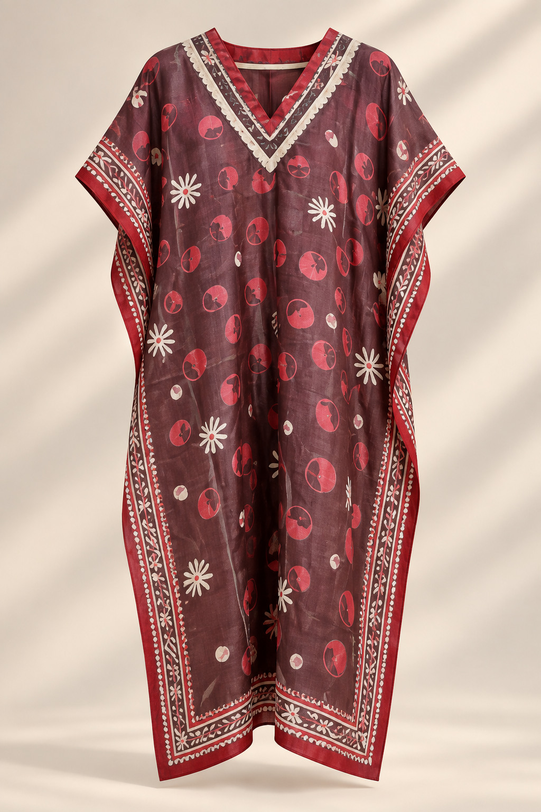

Design Reference 01 KF-01
Crimson Duskクリムゾン・ダスク
深みのあるバーガンディに、
赤とアイボリーのモチーフを散りばめたデザイン。
落ち着いた色彩の中に手描きのリズムが感じられる、
シックで印象的な一着です。
Red and ivory motifs move across a deep burgundy ground, framed by expressive decorative borders.
A rich, sophisticated design with the individual rhythm of hand-painted silk.
- 素材 / Material
- シルク 100% / 100% Silk
- サイズ / Size
- フリーサイズ / Free Size
- 制作 / Production
- 受注制作 / Made to Order
- 納期目安 / Estimated Timeline
- 約10週間 / Approx. 10 weeks
- 価格 / Price
- お問い合わせください / Price on Inquiry